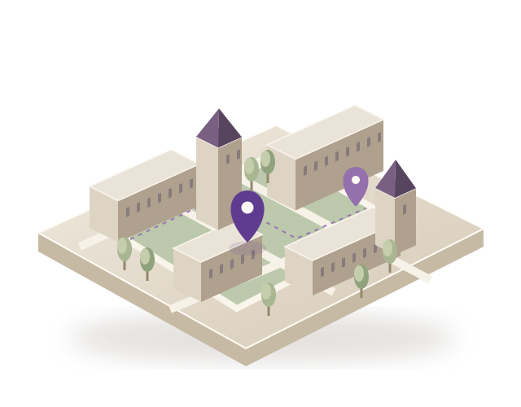

THE CITY COLLEGE OF NEW YORK
Your campus.
Everything
within reach.
Find the spaces, services, and support
that make life at CCNY a little easier.
Start with
Less searching. More finding your place.
A NEW PERSPECTIVE ON YOUR EVERYDAY
An invitation to explore.Illustrative campus model · not a geographic map

A little support.A whole lot of possibility.
Your next stop is closer than you think.
A little direction makes a big difference.
—Eastern Time
FIND YOUR KIND OF SUPPORT
Whatever you need,
there’s a place for it.
Big questions. Small hurdles. Everyday essentials.
There’s a whole campus in your corner.
YOUR NEXT STOP
Good things are closer.
Explore a little. Find what helps.
Classroom demo · confirm hours & locations with CCNY.
Live status follows the example weekly schedules. Holiday exceptions are not included.
BUILT HERE. FOR YOU.
A campus full of possibility.
And people in your corner.
Campus Atlas brings student support into one thoughtful place. A class project made by CCNY students, for the moments when a little direction helps.
View the report logSearch & discoveryFerdosi Hossain
Hours & availabilityKazi Mehzabin
Resource reportingAung Latt
Responsive experienceATM Rahat Hossain
A little more you.Choose your campus accent.